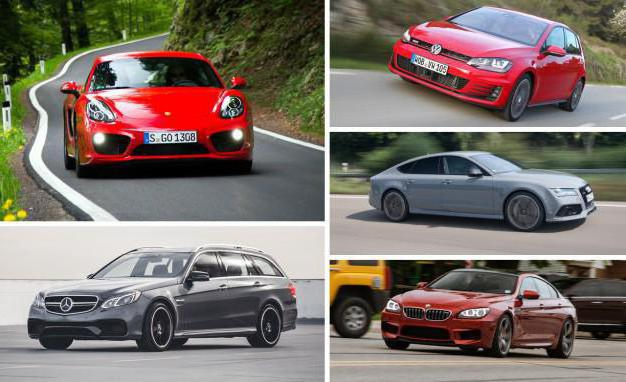

Історія розвитку німецького автомобілебудування

Початком розвитку автопрому можна вважати 1861 рік. В цей час був створений перший двигун внутрішнього згоряння. Зробив це Ніколаус Август Отто. Перший німецький автомобіль був зібраний в 1885 році завдяки старанням Карла Бенца. Він зміг встановити на карету одноциліндровий мотор, який мав потужність одну кінську силу і розганявся до шістнадцяти кілометрів на годину. Протягом наступних років Бенц зумів досягти певних висот у своїй справі. До початку двадцятого століття він уже володів першим автомобільним заводом. В один час з Бенцем працював і Готтліб Даймлер. Його основне досягнення – автомобіль з чотирма циліндрами. Завдяки старанням цих двох інженерів та їх об'єднання виникла марка «Мерседес». Сталося це в 1926 році. Німецькі машини. Список німецьких марок автомобілів Конкурентом був Август Хорьх, який в 1909 році відкрив фірму «Хорьх». Роком пізніше він створив компанію «Ауді». На кілька років пізніше, в 1917 році, Густав Отто і Карл Рапп в Мюнхені відкрили своє підприємство, яке сьогодні відомо всім під маркою «БМВ». Певні складності автовиробники з Німеччини почали відчувати під час приходу до влади фашистів. Вони вимагали створення військової техніки. Автомобілі для громадян були відсунуті на другий план. П'ятдесяті і шістдесяті роки характеризуються занепадом розвитку автомобілебудування Німеччини. Пов'язано це з наслідками Другої світової війни. Але вже до середини сімдесятих все налагодилося. Автомобілі німецьких марок почали швидко завойовувати світ.
Автомобілі німецьких марок визнані у всьому світі. Одні по праву вважаються народними марками. Інші задають тенденцію розвитку всього автопрому, будучи своєрідним прикладом. Але всі вони відрізняються високою якістю, хорошою керованістю і стильним дизайном.